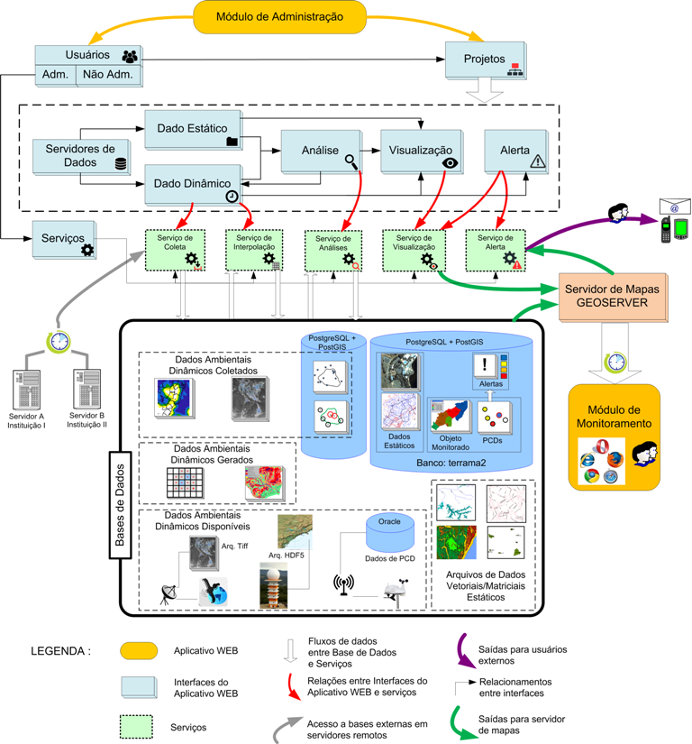

Arquitetura da Plataforma
A plataforma está baseada no conceito de serviços que aceitam uma ou mais requisições e retornam um ou mais resultados com base em tarefas definidas pelo usuário para coletar, analisar, visualizar, criar novos dados e alertar de situações extremas. Uma interface web é utilizada para administrar os serviços e definir tais tarefas serão executados por projetos de monitoramento (Figura 1.2). Esta interface web é identificada como “Módulo de Administração”.
Projetos são administrados por usuários onde são definidos dados dinâmicos e estáticos através de servidores de dados. Análises são definidas fazendo uso de dados estáticos e dinâmicos que são processados com operadores espaciais da plataforma e uma linguagem de programação de fácil utilização. Tais análises produzem novos dados dinâmicos para serem reutilizados. A visualização dos dados é definida para dados estáticos, dinâmicos e análises. O alerta é definido a partir de dados dinâmicos que foram coletados ou resultados de análises que produzem notificações para serem enviadas a usuários.
Uma segunda interface web é utilizada pelo usuário final que terá acesso aos dados por uma interface gráfica. Esta interface web é identificada como “Módulo de Monitoramento” responsável por apresentar todos dados estáticos, dinâmicos, resultados de análises, alertas e dados tabulares associados.

Figura 1.2 – Arquitetura da Plataforma.
Cada serviço realiza um conjunto de tarefas de forma independente, local ou distribuída em diferentes computadores, mas que se comunicam para dar sequência a novos processamentos. Os serviços disponíveis são:
- Serviço de Coleta : Responsável pela coleta dos dados ambientais disponibilizados por servidores de dados, buscando periodicamente tais dados. Caso sejam encontrados, tais dados são baixados e incluídos na base de dados do projeto. Os tipos de servidores de dados e sua localização são definidos através da interface web do módulo de administração. Um serviço de coleta pode ser executado localmente ou remotamente em diferentes máquinas. Veja como utilizar um serviço de coleta para obter dados dinâmicos.
- Serviço de Interpolação: Responsável pela criação de dados dinâmicos matriciais como resultado de interpolação dos dados de PCD ou ocorrências coletados, produzindo novos dados matriciais dinâmicos. Um serviço de interpolação pode ser executado localmente ou remotamente em diferentes máquinas. Veja como utilizar um serviço de interpolação para criar novos dados dinâmicos matriciais.
- Serviço de Análise : Responsável pelo cruzamento entre dos dados ambientais (hidrometeorológicos) e dados estáticos. Uma análise configurada produzirá novos dados dinâmicos, seja geográficos ou tabulares. Os modelos de análises são desenvolvidas com a linguagem de programação Python. Um serviço de análise pode ser executado localmente ou remotamente em diferentes máquinas. Veja como utilizar um serviço de análise para criar novos dados dinâmicos pela interseção espacial entre dados dinâmicos e estáticos.
- Serviço de Visualização : Responsável por publicar dados estáticos, dinâmicos ou resultados de análises no módulo de monitoramento. O serviço utiliza o Geoserver para criar as camadas a serem publicadas, juntamente com o estilo a ser apresentado. Um serviço de visualização pode ser executado localmente ou remotamente em diferentes máquinas. Veja como utilizar um serviço de visualização para publicar todos os dados no módulo de monitoramento.
- Serviço de Alerta : Responsável pelo envio de mensagens e relatórios contendo informações a respeito das alterações nos níveis de risco detectados pelo serviço de análise. Os usuários devem se cadastrar como observadores das análises para receberem os relatórios de alteração, enviados através de correio eletrônico. Um serviço de alerta pode ser executado localmente ou remotamente em diferentes máquinas. Veja como utilizar um serviço de alerta para enviar notificações aos usuários.
A Figura 1.2 mostra ainda como diferentes dados podem estar disponíveis em uma base de dados de um projeto. Note que há dados dinâmicos que são adquiridos pelo serviço de coleta, dados dinâmicos que são gerados pela plataforma como resultado de análises ou interpolações e dados dinâmicos disponíveis por outras tecnologias como radares, satélites ou outros bancos de dados que estão localmente na mesma rede de computadores onde está a plataforma TerraMA². Parte dos dados dinâmicos coletados, como dados de PCD´s e ocorrências, devem ser armazenados em um banco espacial PostgreSQL+PostGIS. Um banco de dados de nome “terrama2” é definido para armazenar todas as tabelas de metadados além de poder armazenar parte dos dados que serão utilizados.